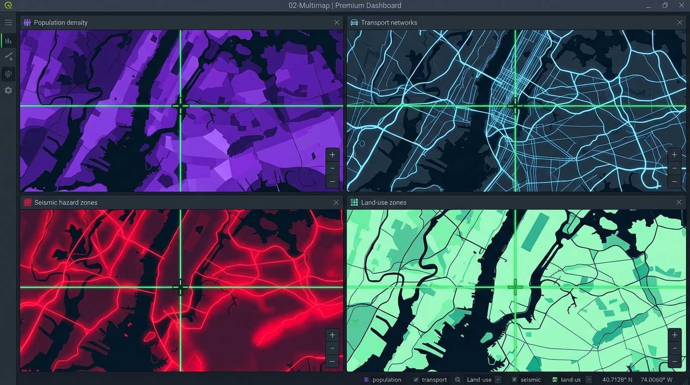

Compare spatial layers, time-series scenarios, and map themes side-by-side in coordinated 2 to 8 panel grids with synchronized laser crosshairs, difference highlights, and HTML presentation dashboards.

Flexible 2, 3, 4, 6, or 8 panel synchronized viewport matrices in horizontal, vertical, or grid layouts with independent splitter controls.
Compute spatial geometry differences between comparison layers. Renders green (added) and red (removed) highlights with live Overlap % ratios.
Click any point on a map panel to query vector feature attributes and raster cell values across all active panels simultaneously.
Real-time calculation of visible polygon areas (ha/km²) and feature counts beneath each panel, paired with corner North Arrow HUD graphics.
Auto-cycle active panel focus or cross-fade timeline layers sequentially across panels for time-series urban growth analysis.
Export interactive, multi-theme (Slate, Midnight, Emerald) offline HTML dashboards complete with full-screen slide presentation mode.